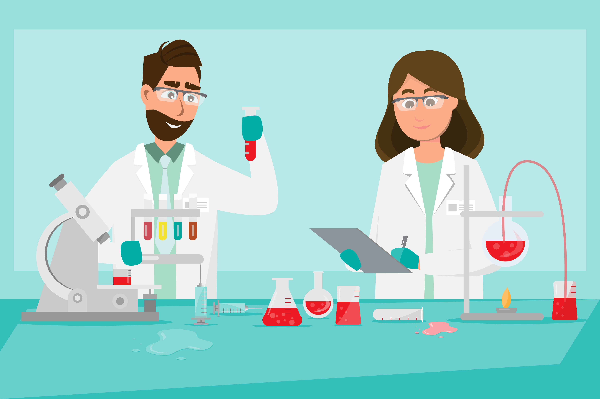
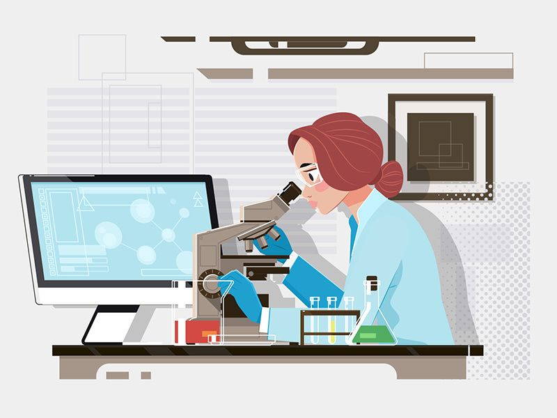
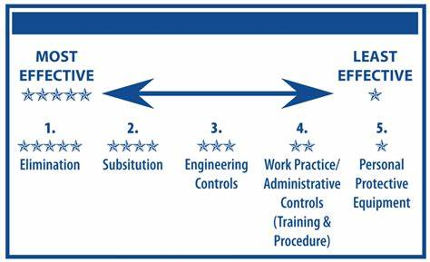

This is a website dedicated to lab safety. Lab safety is important in any lab setting, whether it be a school lab, a research lab, or a medical lab. The Occupational Safety and Health Administration (OSHA) has a set of guidelines that should be followed to ensure the safety of everyone in the lab. One may encounter different types of hazards in the lab, such as chemical hazards, biological hazards, and physical hazards. It is important to understand the different types of hazards and how to protect oneself from them.
This safety guide is not just important in the lab, but in other fields of work as well and day-to-day life. The different sections of this website will provide you with the basic knowledge of lab safety, the different types of safety equipment, and the different types of hazards that may be present in the lab. The video below is a good introduction to lab safety. It is important to understand the different types of hazards and how to protect oneself from them.
Elimination
Elimination is the most effective way to control hazards. This involves removing the hazard from the workplace. This can be done by substituting the hazardous material with a less hazardous one, or by removing the hazard altogether. This would mean that a way to get the desired result without using the hazardous material would be found and done instead. Removing the hazard directly ensures that it will not be present in the workplace at all.
Substitution
Substitution involves replacing the hazardous material with a less hazardous one. This can be done by using a less toxic chemical or by using a less hazardous process. Substituting is the second best option in safety controls. By replacing the hazardous material with a less hazardous one, the risk of exposure to the hazard is reduced.
Engineering Controls
Engineering controls are physical changes to the workplace that reduce the hazard. This can be done by enclosing the hazard or by using ventilation systems to remove the hazard from the workplace. An example of this would be using a fume hood to remove toxic fumes from the workplace. Engineering controls are the third best option in safety controls. It is not always possible to remove the hazard from the workplace, so the next best option is to reduce the risk of exposure to the hazard.
Administrative Controls
Administrative controls are changes to the way work is done that reduce the hazard. This can be done by changing the work schedule or by providing training to workers. An example of this would be providing training to workers on how to handle specific hazardous materials that they will be in contact with. Administrative controls are often in the hands of the employer, so it is important for the employer to provide the necessary training and resources to workers to reduce the risk of exposure to hazards. This includes providing the Safety Data Sheet (SDS) for hazardous materials and emergency response plans.
Personal Protective Equipment (PPE)
Personal protective equipment is the last line of defense against hazards. This includes gloves, goggles, and respirators. PPE should only be used when other controls are not feasible. This will be discussed in more detail in the PPE section.
Personal Protective Equipment (PPE) is one of the most efficient ways to protect individuals working in environments where physical and health hazards may be present. PPE is used in many different fields of work, depending on the potential hazards that may be present. Below are where you might see or use PPE in lab settings specifically.

PPE in a lab may vary depending on the types of hazards present. Most labs will require the use of gloves, lab coats, and safety goggles. Other PPE may include face shields, respirators, and hearing protection. It is important to understand the potential hazards present in the lab and to use the appropriate PPE to protect yourself.
As previously mentioned, PPE is important for different fields of work. This also includes medical fields and even in the field of construction. In the medical field, PPE may include gloves, gowns, masks, and face shields. This protects the healthcare workers from potential exposure to infectious diseases. PPE in the medical field is also important to protect patients from infections and cross-contamination. In the case of construction, PPE may include hard hats, gloves, and steel-toed boots, which protect workers from potential hazards such as falling objects and electrical hazards. Construction workers may also use hearing protection and fall protection to protect themselves from noise and falls.

Safety Data Sheet (SDS) is an important tool in identifying the potential harms that certain substances may cause. In most cases, SDS is required to be provided by the manufacturer, importer, or distributor of the substance. It is important to understand the symbols and the emergency response to take when exposed to these substances. Below are the symbols and the appropriate emergency response to take when exposed to these substances.
For more information on SDS, click here.

What each symbol means and the emergency response to take when exposed
Corrosive
Corrosive substances are capable of causing burns, skin irritation, and severe eye damage. If exposed, rinse the affected area with water for 15 minutes and seek medical attention. Examples of corrosive substances are acids and bases. It's symbol is a picture of a hand being burned by a chemical.
Flammable
Flammable substances are capable of catching fire and causing burns. If exposed, remove any clothing that has been contaminated and rinse the affected area with water for 15 minutes. Seek medical attention. Examples of flammable substances are gasoline and alcohol. It's symbol is a picture of a flame.
Toxic
Toxic substances are capable of causing death or serious injury if inhaled, swallowed, or absorbed through the skin. If exposed, seek medical attention immediately. Examples of toxic substances are pesticides and mercury. It's symbol is a picture of a skull and crossbones.
Irritant
Irritant substances are capable of causing skin and eye irritation. If exposed, rinse the affected area with water for 15 minutes and seek medical attention. Examples of irritant substances are bleach and ammonia. It's symbol is a picture of an exclamation mark.
Oxidizer
Oxidizer substances are capable of causing or intensifying a fire. If exposed, remove any clothing that has been contaminated and rinse the affected area with water for 15 minutes. Seek medical attention. Examples of oxidizer substances are hydrogen peroxide and potassium permanganate. It's symbol is a picture of a flame over a circle.
Health Hazard
Health Hazard substances are capable of causing cancer, respiratory, and reproductive toxicity. If exposed, seek medical attention immediately. Examples of health hazard substances are asbestos and lead. It's symbol is a picture of a person with a star on their chest.
Environmental Hazard
Environmental Hazard substances are capable of causing damage to the environment. If exposed, seek medical attention immediately. Examples of environmental hazard substances are oil and mercury. These chemicals should be disposed of properly as per the guidelines of the Environmental Protection Agency (EPA). It's symbol is a picture of a deceased tree and fish.
Pressurized Gas
Pressurized Gas substances are capable of causing explosions. If exposed, seek medical attention immediately. Examples of pressurized gas substances are propane and butane. It's symbol is a picture of a gas cylinder.
Explosive
Explosive substances are capable of causing explosions. If exposed, seek medical attention immediately. Examples of explosive substances are TNT and nitroglycerin.
References
“Safety Data Sheets (SDS).” OSHA, United States Department of Labor, www.osha.gov/Publications/OSHA3514.html.
“Safety Data Sheets.” Environmental Health and Safety, University of California, Davis, ehs.ucdavis.edu/units/labsafety/chemical-safety/safety-data-sheets.